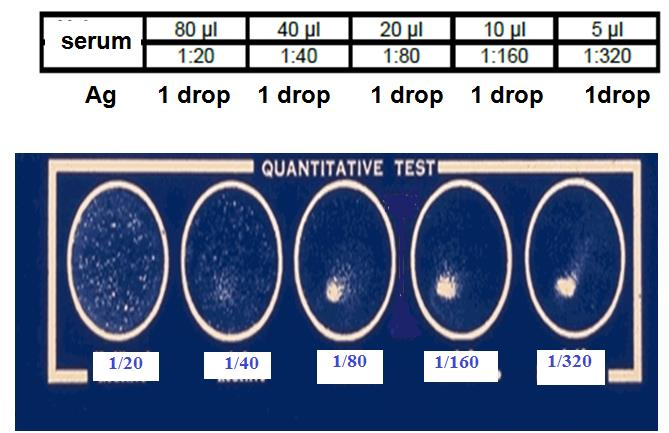

شبنم رضاپور
کسی که PDFها را راضی کرد محتوایشان را بیکموکاست لو بدهند.
این جزوه با استفاده از جزوهساز پاپیروس و به صورت خودکار تولید شده است. ممکن است شامل خطا یا برداشت نادرست باشد و نیازمند بررسی و بازبینی مجدد است.
این مبحث در درس روشهای آزمایشگاهی در سرولوژی و ایمنیشناسی، نامها و ویژگیهای کلی بروسلوز، گونههای بروسلا و میزبانهای مخزن، انتقال و تظاهرات بالینی بیماری، و روشهای تشخیص و تفسیر نتایج آزمایشها را پوشش میدهد.
بروسلوز با نامهای زیر شناخته میشود:
جایگاه اصلی میکروبهای بروسلا حیوانات، بهویژه دامها، است؛ بنابراین بروسلوز یک zoonosis محسوب میشود. بروسلا میتواند در حیوان ماده موجب سقط جنین شود.
تب مالت بهوسیله گونههای مختلف جنس بروسلا ایجاد میشود. گونههای مهم بیماریزا در انسان عبارتاند از:
بهطور کلی، سویههای بروسلا که در غشای خارجی خود لیپوپلیساکارید کمتری دارند، ویرولانس کمتری دارند. عامل شایع تب مالت در ایران بیشتر بروسلا ملیتنسیس است. در آمریکا، بیشترین عوامل بروسلا آبورتوس و بروسلا سوئیس هستند؛ اما در مجموع، عامل شایع بروسلوز در جهان بروسلا ملیتنسیس است.
گونههای بروسلا بر اساس میزبان مخزن (Reservoir host) طبقهبندی و نامگذاری شدهاند:
| گونه | میزبان مخزن |
|---|---|
| بروسلا آبورتوس | گاو |
| بروسلا ملیتنسیس | بز |
| بروسلا کانیس | سگ |
| بروسلا سوئیس (B. suis) | خوک |
| بروسلا رانگیفری تارنادی (B. rangiferi tarnadi) | گوزن شمالی |
| بروسلا اویس (B. ovis) | گوسفند |
| بروسلا نئوتوما (B. neotoma) | موش صحرایی |
تاکنون گزارشی از بیماریزایی بروسلا اویس و بروسلا نئوتوما در انسان دیده نشده است.
| گونه | نکته درباره بیماریزایی در انسان |
|---|---|
| B. abortus، B. melitensis، B. suis | گونههای مهم بیماریزا در انسان |
| B. canis | ممکن است بیماریزا باشد |
| B. ovis، B. neotoma | تاکنون گزارشی از بیماریزایی در انسان دیده نشده است |
| محل یا جمعیت مورد اشاره | عامل شایع یا غالب ذکرشده |
|---|---|
| ایران | بیشتر B. melitensis |
| آمریکا | بیشترین عوامل B. abortus و B. suis |
| جهان، در مجموع | B. melitensis |
انتقال بیماری از راههای زیر صورت میگیرد:
اپیدمیهای بروسلوز همواره با مصرف شیر غیرپاستوریزه، خامه، پنیر و بستنی ارتباط داشتهاند.
دامپزشکان و کارشناسانی که در برنامههای کنترل بروسلوز شرکت میکنند نیز در معرض خطر بیشتری هستند؛ ازجمله بهعلت تلقیح اتفاقی واکسنهای زنده ضعیفشده یا آلودگی ملتحمه با این واکسنها.
| راه انتقال یا گروه در معرض خطر | موارد ذکرشده |
|---|---|
| تماس مستقیم | تماس با حیوان آلوده یا بافتهای آن |
| خوردن مواد آلوده | شیر و محصولات لبنی آلوده؛ اپیدمیها با شیر غیرپاستوریزه، خامه، پنیر و بستنی ارتباط داشتهاند |
| گروههای شغلی در معرض خطر | دامپزشکان و کارشناسان برنامههای کنترل بروسلوز |
| مواجهه شغلی با واکسن | تلقیح اتفاقی واکسنهای زنده ضعیفشده یا آلودگی ملتحمه با آنها |
باکتریهای بروسلا کوکوباسیلهای گرممنفی، هوازی و غیرمتحرکاند و کپسول و اسپور ندارند. آنها داخلسلولی اختیاری و اکسیداز منفی توصیف شدهاند.
دوره نهفتگی بیماری ۱۰ تا ۱۴ روز است و علائم آن به عواملی مانند گونه بیماریزا و مرحله بیماری بستگی دارد.
گونههای بروسلا ممکن است در مواد و شرایط زیر زنده بمانند:
| ماده یا شرایط | مدت بقا یا اثر ذکرشده |
|---|---|
| گوشت یخزده | سه هفته |
| شیر خام | ۱۰ روز |
| پنیر تازه | تا سه ماه |
| بستنی و خامه | مدتی نامشخص |
| گوشت نمکزده | ممکن است مدتی مقاومت کنند |
| دمای ۶۰ درجه سانتیگراد | باکتریها طی ۱۵ دقیقه از بین میروند |
| فنل ۱٪ | باکتریها طی ۱۵ دقیقه از بین میروند |
| نور آفتاب | باکتریها را بهسرعت از بین میبرد |
| طبیعت | ارگانیسمها میتوانند مدت زیادی زنده بمانند |
بروسلا ممکن است در گوشت نمکزده نیز مدتی مقاومت کند؛ بااینحال، دوددادن، منجمدکردن و نمکزدن گوشت آلوده تعداد آن را طی چند روز بهشدت کاهش میدهد. این ارگانیسمها در دمای ۶۰ درجه سانتیگراد یا در مجاورت فنل ۱٪ طی ۱۵ دقیقه از بین میروند، اما در طبیعت میتوانند مدت زیادی زنده بمانند. نور آفتاب نیز آنها را بهسرعت از بین میبرد.
شیره طبیعی معده در شرایط آزمایشگاهی بروسلاها را میکشد. ازاینرو، بسیاری از بیماران مبتلا به بروسلوز فعال دچار کاهش اسید معدهاند و بهعلت زخم معده آنتیاسید مصرف میکنند. افرادی که آنتیاسید مصرف میکنند باید از خوردن شیر خام، پنیر تازه، بستنی و دیگر لبنیات پاستوریزهنشده خودداری کنند.
علائم کلینیکی بروسلوز به سه صورت بروز میکند:
| مرحله | مدت یا روند | تظاهرات ذکرشده |
|---|---|---|
| حاد | کمتر از سه ماه | تب پیوسته یا نامنظم، ضعف، سردرد، تعریق شبانه، آدنوپاتی، اسپلنومگالی، درد ستون مهرهها بهویژه در ناحیه لومبار؛ گاهی هپاتیت، اپیدیدیمیت و ارکیت |
| تحتحاد | حدود ۳ تا ۱۲ ماه؛ پس از مرحله حاد | ادامه بیماری در مرحله تحتحاد |
| مزمن | در صورت درماننشدن؛ از یک تا چند سال | خستگی و افسردگی، درد مفاصل و عضلانی، کاهش وزن، علائم روانی، گاهی تبهای خفیف؛ relapses of varying intensity بسیار شایع است |
مرحله حاد کمتر از سه ماه طول میکشد. تب ممکن است پیوسته یا نامنظم (intermittent) باشد و علائم زیر نیز دیده شوند:
در بعضی موارد، هپاتیت، اپیدیدیمیت (epididymitis) و ارکیت (orchitis) نیز رخ میدهد.
پس از مرحله حاد، بیماری وارد مرحله تحتحاد میشود که حدود ۳ تا ۱۲ ماه ادامه دارد.
در صورت درماننشدن، مرحله مزمن بیماری بروز میکند. علائم آن عبارتاند از:
مرحله مزمن از یک تا چند سال طول میکشد و relapses of varying intensity در آن بسیار شایع است.
شدیدترین علائم در میان گونههای بیماریزا با بروسلا ملیتنسیس و بروسلا سوئیس ایجاد میشود و علائم بروسلا آبورتوس از همه ملایمتر است.
| گونه | شدت علائم ذکرشده |
|---|---|
| بروسلا ملیتنسیس و بروسلا سوئیس | شدیدترین علائم |
| بروسلا آبورتوس | ملایمترین علائم |
تشخیص بیماری به دو روش کلی انجام میشود:
کشت خون، مغز استخوان و CSF (مایع مغزینخاعی)، و نیز کشت مایع مفصلی و دیگر نمونههای بافتی، برای جداسازی عامل بیماری بهکار میروند. قطعیترین راه تشخیص تب مالت، جداسازی عامل بیماری است.
| نمونه یا وضعیت | نتیجه یا نکته کشت |
|---|---|
| بروسلوز حاد ناشی از B. melitensis | کشت خون در ۷۰٪ و کشت مغز استخوان در ۹۰٪ موارد مثبت میشود |
| بروسلوز تحتحاد ناشی از B. melitensis | کشت خون کمتر مثبت میشود، اما انجام آن توصیه میشود |
| عفونت ناشی از B. abortus | کشت خون حتی در بهترین شرایط اغلب منفی است |
| نمونهگیری کشت خون | بهترین زمان هنگام بالا بودن تب است |
| کشت خون در مجموع موارد | بهعلت داخلسلولیبودن باکتری، موارد مثبت حدود ۱۰ تا ۳۰٪ است |
| کشت منفی | باید ۴ تا ۵ هفته نگه داشته شود |
سازمان بهداشت جهانی (W.H.O) پنج آزمایش سرولوژیک استاندارد را بهعنوان مناسبترین آزمایشها برای تشخیص بیماری توصیه کرده است:
| آزمایشهای سرولوژیک استاندارد توصیهشده توسط W.H.O |
|---|
| رز بنگال (Rose Bengal test) |
| سروآگلوتیناسیون لولهای یا رایت (Seroagglutination or Wright test) |
| ۲-مرکاپتواتانول–رایت (2ME–Wright test) |
| ثبوت مکمل (Complement fixation) |
| آنتیگلوبولین یا کومبز رایت (Antiglobulin or Coombs-Wright test) |
در بروسلوز، هم ایمنی سلولی و هم ایمنی هومورال فعال میشوند، اما مصونیت دائمی نیست. آنتیبادیها (Ab) علیه بروسلا از نوع IgM، IgG، IgA و مقدار جزئی IgE هستند.
افزایش IgA در تشخیص بروسلوز مزمن و relapse و نیز بهعنوان Ab مسدودکننده (blocking) مطرح شده است.
| آنتیبادی | تغییر یا کاربرد ذکرشده |
|---|---|
| IgM | ابتدا در بروسلوز حاد افزایش مییابد؛ حدود یک هفته پس از شروع بیماری در سرم ظاهر میشود؛ در هفته دوم تا سوم (۱۳ تا ۲۱ روز) به حداکثر میرسد و طی سه ماه افت میکند؛ گاهی در هفتههای اول تنها ایمونوگلوبولین قابلشناسایی است |
| IgG | از هفته دوم به بعد افزایش مییابد؛ سنتز اختصاصی از روز چهاردهم تا بیستویکم شروع میشود؛ پس از چند هفته تیتر آن از IgM بیشتر میشود؛ شامل IgG1 و IgG2 است |
| IgA | افزایش آن در تشخیص بروسلوز مزمن و relapse و نیز بهعنوان Ab مسدودکننده (blocking) مطرح شده است |
| IgE | به مقدار جزئی وجود دارد |
در موارد درماننشده، IgG دستکم یک سال در سطح بالا باقی میماند. در بیمارانی که بهطور کامل درمان شدهاند، میزان IgG طی ۶ ماه تا یک سال پس از شروع بیماری به حداقل میرسد یا کاملاً محو میشود.
تداوم افزایش IgG ممکن است ناشی از باقیماندن ارگانیسمهای زنده داخلسلولی در نسوج رتیکولوآندوتلیال یا کانونهای دیگر عفونت باشد. بهعلت داخلسلولیبودن باکتری، ایمنی هومورال چندان مؤثر نیست.
با درمان مناسب آنتیبیوتیکی، تیتر IgG کاهش مییابد، اما IgM ممکن است ۶ ماه تا دو سال دوام داشته باشد و معمولاً هر سه ماه یک رقت کاهش مییابد. برای ارزیابی اثر درمان باید تیتر Ab در دوره نقاهت و پس از درمان با تیتر مرحله حاد مقایسه شود؛ کاهش تیتر نشانه تأثیر مثبت درمان و فروکشکردن بیماری است.
| وضعیت بیماری یا درمان | تغییر آنتیبادی و تفسیر ذکرشده |
|---|---|
| درماننشده | IgG دستکم یک سال در سطح بالا باقی میماند |
| درمان کاملشده | IgG طی ۶ ماه تا یک سال پس از شروع بیماری به حداقل میرسد یا کاملاً محو میشود |
| تداوم افزایش IgG | ممکن است ناشی از باقیماندن ارگانیسمهای زنده داخلسلولی در نسوج رتیکولوآندوتلیال یا کانونهای دیگر عفونت باشد |
| درمان مناسب آنتیبیوتیکی | تیتر IgG کاهش مییابد؛ IgM ممکن است ۶ ماه تا دو سال دوام داشته باشد و معمولاً هر سه ماه یک رقت کاهش مییابد |
| ارزیابی اثر درمان | تیتر Ab در دوره نقاهت و پس از درمان با تیتر مرحله حاد مقایسه میشود؛ کاهش تیتر نشانه تأثیر مثبت درمان و فروکشکردن بیماری است |
تشخیص کلاس آنتیبادی در این بیماری اهمیت دارد. در اسلاید بیان شده است که وجود تنها IgM در سرم فرد دلیل بر عدم بیماری و نشاندهنده بروسلوز غیرفعال است. این گزاره با توضیح همین بخش مبنی بر اینکه گاهی IgM تنها ایمونوگلوبولین قابلشناسایی در هفتههای اول بروسلوز حاد است، ناسازگار است؛ هر دو بیان منبع حفظ شدهاند.
افرادی که پیوسته با میکروب بروسلا یا واکسن آن (S.19) در تماساند، ممکن است بدون علائم بالینی، Ab ضد این میکروب، عمدتاً از نوع IgG، با تیتر مساوی یا بیشتر از ۱/۳۲۰ داشته باشند؛ بنابراین آزمایشهای سرولوژیک در بروسلوز شغلی ارزش محدودی دارند.
آزمایش رز بنگال با نامهای زیر نیز شناخته میشود:
این آزمایش سریعترین تست سرولوژیک اولیه یا غربالی برای تشخیص تب مالت است. تست غربالی باید حساسیت بالا، هزینه کم و سرعت زیاد داشته باشد تا بتوان با آن موارد مشکوک و مثبت را از موارد منفی جدا کرد.
| نام یا کاربرد رز بنگال | توضیح |
|---|---|
| نامهای دیگر | Rose Bengal plate test، Card test، Rapid test، Screen test |
| نقش | سریعترین تست سرولوژیک اولیه یا غربالی برای تشخیص تب مالت |
| ویژگیهای لازم برای تست غربالی | حساسیت بالا، هزینه کم و سرعت زیاد |
| هدف تست غربالی | جداکردن موارد مشکوک و مثبت از موارد منفی |
آنتیژن رز بنگال، به رنگ قرمز متمایل به صورتی، با pH اسیدی ۳٫۶±۰٫۰۵ و جرم نهایی ۸٪، از کلنی صاف (Smooth) بروسلا آبورتوس سویه ۹۹ یا ۱۹ تهیه میشود. این سویهها آنتیژنهای مشترکی با سویههای دیگر بروسلا دارند.
آنتیژن باید دور از نور و در یخچال ۴°C نگهداری شود و تا زمانی که آگلوتینه نشده است، قابل نگهداری است. برای جلوگیری از تغییر pH نباید این Ag را رقیق کرد و نباید از آن در تست لولهای استفاده کرد.
| ویژگی آنتیژن رز بنگال | مقدار یا توضیح |
|---|---|
| رنگ | قرمز متمایل به صورتی |
| pH | اسیدی، ۳٫۶±۰٫۰۵ |
| جرم نهایی | ۸٪ |
| منبع تهیه | کلنی صاف (Smooth) بروسلا آبورتوس سویه ۹۹ یا ۱۹ |
| ارتباط آنتیژنی | سویهها آنتیژنهای مشترکی با سویههای دیگر بروسلا دارند |
| نگهداری | دور از نور و در یخچال ۴°C؛ تا زمانی که آگلوتینه نشده است، قابل نگهداری است |
| محدودیت استفاده | برای جلوگیری از تغییر pH نباید رقیق شود و نباید در تست لولهای استفاده شود |
در صورت منفیشدن نتیجه، احتمال بیمارنبودن شخص زیاد است. در صورت مثبتشدن، برای تأیید و تعیین تیتر از تست دقیقتر لولهای یا رایت استفاده میشود. بااینحال، بهتر است تست لولهای هم در صورت مثبتشدن و هم در صورت منفیشدن تست انجام شود.
| نتیجه رز بنگال | تفسیر یا اقدام بعدی |
|---|---|
| منفی | احتمال بیمارنبودن شخص زیاد است |
| مثبت | برای تأیید و تعیین تیتر از تست دقیقتر لولهای یا رایت استفاده میشود |
| توصیه ذکرشده | بهتر است تست لولهای هم در صورت مثبتشدن و هم در صورت منفیشدن تست انجام شود |
آزمایش رایت به دو روش سریع روی لام و روش لولهای انجام میشود.
بروسلا آبورتوس (سویه ۹۹ یا ۱۹)، بروسلا سوئیس و بروسلا ملیتنسیس آنتیژنهای مشترک (Cross reaction) دارند؛ بنابراین برای آزمایش رایت معمولاً از کلنیهای صاف بروسلا آبورتوس (سویه ۹۹ یا ۱۹) یا بروسلا ملیتنسیس بهعنوان آنتیژن استفاده میشود.
اگر بیماری ناشی از بروسلا کانیس باشد، برای تشخیص باید از آنتیژن همین گونه استفاده کرد. آنتیژن بروسلا در روش اسلایدی معمولاً آبیرنگ و در روش لولهای شیریرنگ است. در روش لولهای، سازنده آنتیژن رقت Ag بروسلا را که باید به سرم افزوده شود مشخص میکند.
| مورد | توضیح |
|---|---|
| گونههای دارای آنتیژن مشترک (Cross reaction) | B. abortus سویه ۹۹ یا ۱۹، B. suis و B. melitensis |
| آنتیژن معمول آزمایش رایت | کلنی صاف B. abortus سویه ۹۹ یا ۱۹ یا B. melitensis |
| عفونت ناشی از B. canis | برای تشخیص باید از آنتیژن همین گونه استفاده کرد |
| رنگ آنتیژن در روش اسلایدی | معمولاً آبیرنگ |
| رنگ آنتیژن در روش لولهای | شیریرنگ |
| رقت Ag در روش لولهای | سازنده آنتیژن مشخص میکند |
حجمهای ۰٫۰۸، ۰٫۰۴، ۰٫۰۲، ۰٫۰۱ و ۰٫۰۰۵ سیسی سرم را روی اسلاید چندخانه میریزند و به هرکدام یک قطره Ag بروسلا (آبیرنگ) اضافه میکنند. پس از مخلوطکردن و حرکتدادن اسلاید بهمدت ۳ دقیقه، آگلوتیناسیون را زیر چراغ مطالعه بررسی میکنند. آخرین تیتر با حدود ۲+ مثبت، تیتر موردنظر است.
| حجم سرم (cc) | رقت سرم |
|---|---|
| ۰٫۰۸ | ۱/۲۰ |
| ۰٫۰۴ | ۱/۴۰ |
| ۰٫۰۲ | ۱/۸۰ |
| ۰٫۰۱ | ۱/۱۶۰ |
| ۰٫۰۰۵ | ۱/۳۲۰ |

تصویر 1در تصویر، مقادیر سرم ۸۰، ۴۰، ۲۰، ۱۰ و ۵ µl، رقتهای ۱:۲۰، ۱:۴۰، ۱:۸۰، ۱:۱۶۰ و ۱:۳۲۰ و افزودن یک قطره Ag به هرکدام نشان داده شده است؛ عنوان تصویر QUANTITATIVE TEST است.
در روش لولهای رایت، ۱۰ لوله آزمایش انتخاب میشود:
ترکیب لولهها به این صورت است:
| لولهها | مقدار saline | مقدار سرم | مقدار Ag رقیقشده ۱/۱۰ |
|---|---|---|---|
| ۱ | ۰٫۹ cc | ۰٫۱ cc | ۰٫۵ cc |
| ۲ تا ۹ | هرکدام ۰٫۵ cc | هرکدام ۰٫۵ cc | هرکدام ۰٫۵ cc |
| ۱۰ | ۰٫۵ cc | سرم اضافه نمیشود؛ کنترل | ۰٫۵ cc |
رقتهای لولههای ۱ تا ۹ بهترتیب عبارتاند از:
۱/۲۰، ۱/۴۰، ۱/۸۰، ۱/۱۶۰، ۱/۳۲۰، ۱/۶۴۰، ۱/۱۲۸۰، ۱/۲۵۶۰ و ۱/۵۱۲۰؛ لوله دهم کنترل است.
| لوله | رقت |
|---|---|
| ۱ | ۱/۲۰ |
| ۲ | ۱/۴۰ |
| ۳ | ۱/۸۰ |
| ۴ | ۱/۱۶۰ |
| ۵ | ۱/۳۲۰ |
| ۶ | ۱/۶۴۰ |
| ۷ | ۱/۱۲۸۰ |
| ۸ | ۱/۲۵۶۰ |
| ۹ | ۱/۵۱۲۰ |
| ۱۰ | کنترل |
برای بررسی آگلوتیناسیون در لوله، هم supernatant (مایع رویی) و هم pellet (رسوب ته لوله) ارزیابی میشوند.
برای تأیید نتیجه مثبت، لوله را بهآرامی مخلوط میکنند تا دو آگلوتیناسیون مشاهده شود.
کدورت supernatant را میتوان با پنج لوله استاندارد کدورت مقایسه کرد. حجم saline در این استانداردها بهترتیب ۱، ۰٫۷۵، ۰٫۵ و ۰٫۲۵ cc و حجم Ag رقیقشده ۱/۱۰ بهترتیب صفر، ۰٫۲۵، ۰٫۵، ۰٫۷۵ و ۱ cc است؛ نتیجه متناظر از ۴+، ۳+، ۲+، ۱+ تا Neg گزارش میشود. تحقیقات نشان داده است که استفاده از آبنمک ۵٪ بهجای ۹ در هزار برای رقیقکردن سرم ممکن است از پدیده منطقهای جلوگیری کند.
| درجه کدورت استاندارد | حجم saline (cc) | حجم Ag رقیقشده ۱/۱۰ (cc) |
|---|---|---|
| ۴+ | ۱ | صفر |
| ۳+ | ۰٫۷۵ | ۰٫۲۵ |
| ۲+ | ۰٫۵ | ۰٫۵ |
| ۱+ | ۰٫۲۵ | ۰٫۷۵ |
| Neg | — | ۱ |
| الگوی مشاهدهشده | تفسیر |
|---|---|
| Ag آگلوتینهشده، رسوب مضرس در ته لوله و مایع رویی کاملاً شفاف | مثبت |
| مایع رویی کدر (turbid) و رسوب بهشکل نقطه کاملاً منظم | منفی |
موارد مثبت کاذب در تست رایت عبارتاند از:
| موارد مثبت کاذب در تست رایت |
|---|
| وبا |
| تولارمی |
| عفونت ناشی از یرسینیا آنتروکولیتیکا |
| تماس با واکسنهای حاوی ویبریو کلرا، فرانسیسلا و یرسینیا |
| عفونتهای ناشی از گونههای سالمونلا |
| پسودوموناس مالتوفیلیا |
| اشریشیای O116 |
| تست بروسلین |
۱. عفونت با بروسلا کانیس: سرم بیمار معمولاً آنتیژن استاندارد بروسلا را آگلوتینه نمیکند، زیرا این آنتیژنها تشابه آنتیژنی ندارند. بنابراین برای تشخیص این نوع بیماری باید از تستهای اختصاصی استفاده کرد.
۲. پدیده پروزون: اگر سرم بیمار تا رقتی بیش از ۱/۳۲۰ و، بهقولی، تا ۱/۱۲۸۰ در آزمایشگاه رقیق نشود، احتمال پدیده پروزون وجود دارد و نتیجه ممکن است کاذباً منفی گزارش شود.
۳. بیماری مزمن: بهعلت پایینبودن یا نبودن IgM و دخالت ایمونوگلوبولینهای ناقص در واکنش و اشغال گیرندههای آنتیژنی بهوسیله آنها، ممکن است آگلوتیناسیون رخ ندهد و نتیجه منفی کاذب شود. آزمایش کومبز رایت و آنتیهیومن گلوبولین میتوانند از بروز چنین نتیجهای جلوگیری کنند.
۴. نقص سیستم آنتیسازی و کمبود گاماگلوبولینها: این موارد نیز موجب منفی کاذب میشوند.
۵. انجام زودهنگام آزمایش: اگر تست رایت پیش از تشکیل مقدار کافی آنتیبادی، مثلاً در اوایل بیماری حاد، انجام شود، بهعلت تولیدنشدن آنتیبادی اختصاصی نتیجه منفی کاذب خواهد بود.
| علت منفی کاذب | توضیح یا اقدام ذکرشده |
|---|---|
| عفونت با B. canis | سرم معمولاً آنتیژن استاندارد بروسلا را آگلوتینه نمیکند؛ باید از تستهای اختصاصی استفاده کرد |
| پدیده پروزون | اگر سرم تا رقتی بیش از ۱/۳۲۰ و، بهقولی، تا ۱/۱۲۸۰ رقیق نشود، نتیجه ممکن است کاذباً منفی گزارش شود |
| بیماری مزمن | پایینبودن یا نبودن IgM و دخالت ایمونوگلوبولینهای ناقص و اشغال گیرندههای آنتیژنی میتواند مانع آگلوتیناسیون شود؛ کومبز رایت و آنتیهیومن گلوبولین میتوانند از این نتیجه جلوگیری کنند |
| نقص سیستم آنتیسازی و کمبود گاماگلوبولینها | موجب منفی کاذب میشوند |
| انجام زودهنگام آزمایش | پیش از تولید مقدار کافی آنتیبادی اختصاصی، ازجمله در اوایل بیماری حاد، نتیجه ممکن است منفی کاذب شود |
در هفتههای اول بیماری IgM افزایش مییابد و دو هفته پس از شروع بیماری IgG نیز افزایش پیدا میکند. با تشخیص بهموقع و درمان سریع و کافی، آنتیبادیهای IgG طی ۶ تا ۱۲ ماه از سرم محو میشوند. اگر بیماری تشخیص داده نشود و درمان نشود، در بیش از ۱۵٪ موارد سیر بیماری ادامه مییابد و آگلوتینینهای IgG در سطح بالا باقی میمانند.
در بسیاری از مبتلایان، حتی پس از درمان کامل، عیار آگلوتینینهای IgM و درنتیجه عیار تست رایت ممکن است چندین سال مثبت باقی بماند؛ تست 2ME برای بررسی این موضوع بهکار میرود.
این آزمایش پس از مثبتشدن آزمایش رایت برای تعیین کلاس Ab انجام میشود. غلظتی حدود ۰٫۱ M از 2-ME مولکولهای IgM سرم را از بین میبرد، اما IgG باقی میماند.
مهمترین کاربرد تست، افتراق بروسلوز فعال از غیرفعال در فردی است که ظاهراً تظاهرات بالینی بیماری را دارد، ولی کشت خون یا نمونههای دیگر او عاری از میکروب بروسلاست و تیتر آزمایش رایت نیز پایین است. همچنین با این آزمایش میتوان اثر آنتیبیوتیک مناسب را در درمان بررسی کرد: با درمان، تیتر IgG پایین میآید، درحالیکه IgM مدتها باقی میماند.
| جنبه | توضیح |
|---|---|
| تغییر آنتیبادی در هفتههای اول | ابتدا IgM و از حدود دو هفته پس از شروع بیماری IgG افزایش مییابد |
| درمان سریع و کافی | آنتیبادیهای IgG طی ۶ تا ۱۲ ماه از سرم محو میشوند |
| بیماری تشخیصنداده و درماننشده | در بیش از ۱۵٪ موارد سیر بیماری ادامه مییابد و آگلوتینینهای IgG در سطح بالا باقی میمانند |
| باقیماندن عیار IgM | در بسیاری از مبتلایان، حتی پس از درمان کامل، عیار آگلوتینینهای IgM و درنتیجه عیار تست رایت ممکن است چندین سال مثبت بماند |
| مبنای 2ME | غلظتی حدود ۰٫۱ M از 2-ME مولکولهای IgM را از بین میبرد، اما IgG باقی میماند |
| کاربرد | پس از مثبتشدن رایت برای تعیین کلاس Ab؛ افتراق بروسلوز فعال از غیرفعال در شرایط توصیفشده؛ بررسی اثر آنتیبیوتیک مناسب |
روش انجام 2ME-Wright شبیه تست لولهای است، با این تفاوت که بهجای saline از محلول 2ME استفاده میشود:
در جدول این آزمایش ۱۰ لوله بهکار میرود:
| مرحله یا جزء | مقدار یا شرایط |
|---|---|
| محلول جایگزین saline | 2ME |
| لوله اول پیش از افزودن سرم | ۰٫۹ cc 2ME |
| سرم در لوله اول | ۰٫۱ cc |
| انکوباسیون برای تخریب IgM | یک ساعت در ۳۷°C |
| Ag | رقیقشده ۱/۱۰؛ ۰٫۵ cc به همه لولهها |
| انکوباسیون پس از افزودن Ag | ۲۴ تا ۲۸ ساعت در ۳۷°C |
| گزارش تیتر | آخرین رقتی که ۲+ مثبت شود |
| لولههای دیگر | 2ME در لولههای دیگر هرکدام ۰٫۵؛ سرم در لولههای ۲ تا ۹ هرکدام ۰٫۵ و در لوله دهم صفر |
| رقتها و کنترل | از ۱/۲۰ تا ۱/۵۱۲۰، مطابق رقتهای سری لولهای رایت؛ لوله دهم کنترل |
در فاز مزمن یا هنگام عود بروسلوز، در برخی افراد Abهایی ضد بروسلا ایجاد میشوند که توانایی آگلوتیناسیون ندارند و Abهای ناقص (incomplete) یا مسدودکننده (blocking) نامیده میشوند. این Abها به Ag میچسبند و مانع عملکرد Abهای کامل بروسلا میشوند؛ Abهای کامل قادر به آگلوتیناسیون کامل آنتیژن بروسلا هستند.
در این موارد، تست بیمار منفی است، اما علائم بالینی و یافتههای اپیدمیولوژیک پزشک را به بیماری مشکوک میکنند.
| نوع Ab | ویژگی ذکرشده |
|---|---|
| Ab ناقص (incomplete) یا مسدودکننده (blocking) | در فاز مزمن یا هنگام عود بروسلوز ممکن است ایجاد شود؛ توانایی آگلوتیناسیون ندارد، به Ag میچسبد و مانع عملکرد Abهای کامل بروسلا میشود |
| Ab کامل | قادر به آگلوتیناسیون کامل آنتیژن بروسلا است |
این تیتر باید دستکم دو تیتر بالاتر از SAT باشد. برای تشخیص این موارد میتوان از آزمایشهای حساسی مانند ثبوت مکمل و ELISA استفاده کرد.
پس از ایجاد رقت در تست SAT، بهجای قراردادن لولهها بهمدت ۲۴ ساعت در ۳۷°C، آنها را بلافاصله ۱۰ دقیقه با سرعت ۲۵۰۰ دور در دقیقه سانتریفیوژ میکنند و نتیجه را گزارش میدهند. این روش پدیده منطقهای را نیز از بین میبرد.
| روش | اقدام و شرایط ذکرشده | نکته گزارششده |
|---|---|---|
| کومبز–رایت | انجام رایت؛ سانتریفیوژ لولههای منفی، شستوشوی رسوب با saline، افزودن AHG و انکوباسیون در ۳۷°C؛ سپس سانتریفیوژ و بررسی آگلوتیناسیون | تیتر باید دستکم دو تیتر بالاتر از SAT باشد |
| رایت سانتریفوژ | پس از ایجاد رقت در SAT، بهجای انکوباسیون ۲۴ ساعته در ۳۷°C، لولهها بلافاصله ۱۰ دقیقه با سرعت ۲۵۰۰ دور در دقیقه سانتریفیوژ میشوند | پدیده منطقهای را نیز از بین میبرد |
در اسلاید، تست ELISA از نظر حساسیت و ویژگی برتر از تست استاندارد رایت و فیکساسیون کمپلمان معرفی شده و ذکر شده است که میتواند هر دو ایمونوگلوبولین M و G را تشخیص دهد.
وقتی تفسیر تستهای آگلوتیناسیونی مبهم باشد، میتوان با ELISA پاسخ را قطعی کرد. بررسی IgM یا IgG در این تست امکان افتراق حالت حاد و مزمن بروسلوز را فراهم میکند.
| ویژگی تست ELISA | توضیح |
|---|---|
| حساسیت و ویژگی | در اسلاید برتر از تست استاندارد رایت و فیکساسیون کمپلمان معرفی شده است |
| آنتیبادیهای قابلشناسایی | IgM و IgG |
| کاربرد هنگام ابهام | در صورت مبهمبودن تفسیر تستهای آگلوتیناسیونی، میتوان با ELISA پاسخ را قطعی کرد |
| افتراق حالت بیماری | بررسی IgM یا IgG امکان افتراق حالت حاد و مزمن بروسلوز را فراهم میکند |
| مزیت | نداشتن مشکلات مربوط به آنتیبادیهای بلوکان و غیرآگلوتینهکننده (Nonagglutinating) |
| عیب | واکنش متقاطع با یرسینیوز |
تشخیص بروسلوز یا تب مالت بر اساس مجموعه اطلاعات اپیدمیولوژیک، بالینی و آزمایشگاهی انجام میشود.
| اطلاعات مورد استفاده در تشخیص | محتوای ارزیابی |
|---|---|
| اپیدمیولوژیک | اطلاعات اپیدمیولوژیک |
| بالینی | اطلاعات و تظاهرات بالینی |
| آزمایشگاهی | نتایج آزمایشگاهی |
مرحله حاد بروسلوز با آزمایش سریع رز بنگال بررسی میشود. بررسیها نشان دادهاند که این تست بسیار حساس است و نتیجه آن با ELISA قابل مقایسه است.
آنتیژن رز بنگال در pH اسیدی با عوامل بیماریزای تولارمی و ویبریو کلرا واکنش متقاطع ندارد؛ بنابراین مثبت کاذب در این آزمایش بسیار نادر است.
| نکته در تفسیر رز بنگال | توضیح |
|---|---|
| کاربرد | بررسی مرحله حاد بروسلوز |
| حساسیت | بسیار حساس توصیف شده و نتیجه آن با ELISA قابل مقایسه است |
| واکنش متقاطع | آنتیژن در pH اسیدی با عوامل بیماریزای تولارمی و ویبریو کلرا واکنش متقاطع ندارد |
| مثبت کاذب | بسیار نادر است |
در تست SAT، تیتر قابلارزش در ایران دستکم ۱/۸۰ است. تیترهای پایینتر مانند ۱/۲۰ و ۱/۴۰ را نیز نباید بیاهمیت شمرد، مگر آنکه:
افرادی که با دام سروکار دارند و واکسن بروسلا دریافت کردهاند، ممکن است بدون ابتلا به بروسلوز تیتر پایه بالایی داشته باشند؛ تیتر Ab از نوع IgG در این افراد میتواند ۱/۳۲۰ یا بالاتر باشد.
| نتیجه یا وضعیت SAT | تفسیر ذکرشده |
|---|---|
| تیتر قابلارزش در ایران | دستکم ۱/۸۰ |
| تیتر ۱/۲۰ یا ۱/۴۰ | نباید بیاهمیت شمرده شود، مگر آنکه تظاهرات کلینیکی مانند درد استخوانی و مفصلی و تب وجود نداشته باشد و در تکرار پس از دو هفته افزایش تیتر دیده نشود، یا آزمایش 2ME منفی باشد |
| تماس با دام و دریافت واکسن بروسلا | ممکن است بدون ابتلا به بروسلوز، تیتر پایه بالایی داشته باشند |
| تیتر IgG در افراد تماسیافته با دام و واکسینهشده | ممکن است ۱/۳۲۰ یا بالاتر باشد |
در اوایل بیماری تیتر Ab پایین است و معمولاً اواخر هفته اول یا اوایل هفته دوم مثبت میشود. آنتیبادی اولیه IgM است و پس از آن IgG (IgG1 و IgG2) افزایش مییابد؛ پس از چند هفته تیتر IgG از IgM بیشتر میشود.
اگر تیتر Ab پایین باشد، اما شواهد بیماری را تأیید کنند، باید آزمایش را یک تا دو هفته بعد تکرار کرد. افزایش تیتر باید چهار برابر (4 Fold rising) باشد تا مثبت تلقی شود.
حداکثر میزان مناسب آنتیبادی در هفتههای چهارم تا هشتم بیماری دیده میشود و بیشتر به وجود IgG مربوط است. با درمان مناسب، تیتر IgG کاهش مییابد، اما IgM ممکن است ۶ ماه تا دو سال دوام داشته باشد؛ این موضوع با آزمایش 2ME مشخص میشود. در چنین شرایطی باید سرم را رقیق کرد و آزمایش رایت را انجام داد. تیتر بالای آنتیبادی گاهی موجب پدیده پروزون (Prozone) میشود.
| زمان یا وضعیت | تغییر یا اقدام ذکرشده |
|---|---|
| اوایل بیماری | تیتر Ab پایین است |
| اواخر هفته اول یا اوایل هفته دوم | تیتر معمولاً مثبت میشود |
| توالی افزایش آنتیبادی | ابتدا IgM و سپس IgG (IgG1 و IgG2) افزایش مییابد؛ پس از چند هفته تیتر IgG از IgM بیشتر میشود |
| تیتر پایین با شواهد تأییدکننده بیماری | آزمایش را یک تا دو هفته بعد تکرار میکنند |
| افزایش لازم برای مثبت تلقیشدن | چهار برابر (4 Fold rising) |
| هفتههای چهارم تا هشتم | حداکثر میزان مناسب آنتیبادی دیده میشود و بیشتر به وجود IgG مربوط است |
| درمان مناسب | تیتر IgG کاهش مییابد، اما IgM ممکن است ۶ ماه تا دو سال دوام داشته باشد؛ این موضوع با 2ME مشخص میشود |
| تیتر بالای آنتیبادی | گاهی موجب پدیده پروزون (Prozone) میشود؛ در شرایط ذکرشده باید سرم را رقیق کرد و آزمایش رایت را انجام داد |
عود بیماری پس از درمان یکی از مشکلات بروسلوز است. در این حالت، آزمایشهای عادی یا 2ME ممکن است نتوانند آنتیبادی را تشخیص دهند، اما روشهایی مانند کومبز رایت یا ELISA قابلیت تشخیص آن را دارند.
میکروبهای بروسلا با Francisella tularensis، Vibrio cholerae و Yersinia enterolytica ساختمان آنتیژنی مشترک دارند؛ بنابراین عفونت با این میکروبها میتواند تیتر آگلوتیناسیون ضد بروسلا را افزایش دهد.
| وضعیت یا عامل | نتیجه یا روش ذکرشده |
|---|---|
| عود بیماری پس از درمان | یکی از مشکلات بروسلوز است |
| عود و آزمایشهای عادی یا 2ME | ممکن است نتوانند آنتیبادی را تشخیص دهند |
| عود و کومبز رایت یا ELISA | این روشها قابلیت تشخیص آنتیبادی را دارند |
| Francisella tularensis، Vibrio cholerae و Yersinia enterolytica | ساختمان آنتیژنی مشترک با بروسلا دارند؛ عفونت با آنها میتواند تیتر آگلوتیناسیون ضد بروسلا را افزایش دهد |
اگر مادر مبتلا به بروسلوز باشد، آزمایش نوزاد کمتر از ۶ ماه ممکن است بهعلت عبور Ab از نوع IgG از جفت مثبت شود. در این حالت SAT و 2ME هر دو انجام میشوند و نتایج با هم مقایسه میشوند:
راه دیگر، تکرار آزمایش پس از ۳ تا ۴ هفته است؛ اگر تیتر کاهش یابد، بیماری از مادر بوده است.
| یافته در نوزاد کمتر از ۶ ماه، با مادر مبتلا | تفسیر ذکرشده |
|---|---|
| مثبتشدن آزمایش | ممکن است بهعلت عبور Ab از نوع IgG از جفت باشد |
| تیتر SAT و 2ME یکسان | مثبتشدن به Ab مادری نسبت داده میشود |
| تیتر SAT بالاتر | نشاندهنده وجود Ab از نوع IgM ضد بروسلا و بیانگر ابتلای خود نوزاد به تب مالت است |
| تکرار آزمایش پس از ۳ تا ۴ هفته و کاهش تیتر | بیماری از مادر بوده است |
در تشخیص بروسلوز عصبی (نوروبروسلوز)، یعنی هنگامی که باکتری در پرده مننژ جایگزین میشود، بررسی سرولوژی CSF ارزش فراوان دارد و باید تیتر Ab ضد بروسلا در مایع نخاع و سرم با هم مقایسه شود.
اگر نسبت تیتر مایع نخاع به سرم بیش از ۱/۱۰۰ باشد، نشاندهنده درگیری CNS است. منفیبودن آزمایشهای سرولوژی مایع نخاع، نوروبروسلوز را رد نمیکند. همچنین ممکن است هنگام بروز نشانههای عصبی تب مالت، آزمایش رایت سرم نیز منفی شود؛ هنگامی که میکروب بروسلا در یک ارگان رشد میکند، آزمایش سرم ممکن است منفی شود.
| مورد ارزیابی در نوروبروسلوز | توضیح |
|---|---|
| تعریف ذکرشده | بروسلوز عصبی (نوروبروسلوز)، یعنی هنگامی که باکتری در پرده مننژ جایگزین میشود |
| نمونه و بررسی | بررسی سرولوژی CSF ارزش فراوان دارد؛ تیتر Ab ضد بروسلا در مایع نخاع و سرم باید مقایسه شود |
| نسبت تیتر مایع نخاع به سرم بیش از ۱/۱۰۰ | نشاندهنده درگیری CNS است |
| سرولوژی منفی مایع نخاع | نوروبروسلوز را رد نمیکند |
| رایت سرم هنگام نشانههای عصبی | ممکن است منفی شود؛ هنگامی که میکروب بروسلا در یک ارگان رشد میکند، آزمایش سرم ممکن است منفی شود |
برای انجام آزمایشهای فبرایل نباید سرم بیمار را حرارت داد، زیرا ممکن است تیتر Abهای سرم کاهش یابد. اگر سرم دارای خون همولیز باشد، نتیجه آزمایش مثبت کاذب میشود.
| وضعیت نمونه سرم | پیامد یا نکته |
|---|---|
| حرارتدادن سرم پیش از آزمایشهای فبرایل | نباید انجام شود، زیرا ممکن است تیتر Abهای سرم کاهش یابد |
| وجود خون همولیز در سرم | نتیجه آزمایش مثبت کاذب میشود |
تهیهکننده: دکتر طاهره کلانتری
عضو هیئت علمی دانشکده پیراپزشکی
| گونه | میزبان مخزن | نکته درباره بیماریزایی در انسان |
|---|---|---|
| B. abortus | گاو | از گونههای مهم بیماریزا؛ علائم ملایمتر از گونههای دیگرِ ذکرشده |
| B. melitensis | بز | از گونههای مهم بیماریزا؛ عامل شایع در ایران و در جهان |
| B. suis | خوک | از گونههای مهم بیماریزا؛ همراه B. melitensis موجب شدیدترین علائم میشود |
| B. canis | سگ | ممکن است بیماریزا باشد؛ برای تشخیص باید از آنتیژن همین گونه استفاده کرد |
| B. rangiferi tarnadi | گوزن شمالی | — |
| B. ovis | گوسفند | تاکنون گزارشی از بیماریزایی در انسان دیده نشده است |
| B. neotoma | موش صحرایی | تاکنون گزارشی از بیماریزایی در انسان دیده نشده است |
| محل مورد اشاره | عامل شایع یا غالب |
|---|---|
| ایران | بیشتر B. melitensis |
| آمریکا | بیشترین عوامل B. abortus و B. suis |
| جهان، در مجموع | B. melitensis |
| موضوع | اطلاعات ذکرشده |
|---|---|
| راههای انتقال | تماس با حیوان آلوده یا بافتهای آن؛ خوردن شیر و محصولات لبنی آلوده |
| محصولات مرتبط با اپیدمیها | شیر غیرپاستوریزه، خامه، پنیر و بستنی |
| گروههای شغلی در معرض خطر | دامپزشکان و کارشناسان برنامههای کنترل بروسلوز |
| مواجهه شغلی با واکسن | تلقیح اتفاقی واکسنهای زنده ضعیفشده یا آلودگی ملتحمه با آنها |
| ویژگی باکتری | کوکوباسیل گرممنفی، هوازی، غیرمتحرک، فاقد کپسول و اسپور، داخلسلولی اختیاری؛ اکسیداز منفی در اسلاید |
| دوره نهفتگی | ۱۰ تا ۱۴ روز |
| گوشت یخزده | سه هفته |
| شیر خام | ۱۰ روز |
| پنیر تازه | تا سه ماه |
| بستنی و خامه | مدتی نامشخص |
| گوشت نمکزده | ممکن است مدتی مقاومت کند؛ دوددادن، منجمدکردن و نمکزدن گوشت آلوده تعداد باکتری را طی چند روز بهشدت کاهش میدهد |
| دمای ۶۰°C یا فنل ۱٪ | باکتریها طی ۱۵ دقیقه از بین میروند |
| نور آفتاب | باکتریها را بهسرعت از بین میبرد |
| طبیعت | ارگانیسمها میتوانند مدت زیادی زنده بمانند |
| مرحله | مدت یا روند | تظاهرات |
|---|---|---|
| حاد | کمتر از سه ماه | تب پیوسته یا نامنظم، ضعف، سردرد، تعریق شبانه، آدنوپاتی، اسپلنومگالی، درد ستون مهرهها بهویژه ناحیه لومبار؛ گاهی هپاتیت، اپیدیدیمیت و ارکیت |
| تحتحاد | حدود ۳ تا ۱۲ ماه؛ پس از مرحله حاد | ادامه بیماری در مرحله تحتحاد |
| مزمن | در صورت درماننشدن؛ یک تا چند سال | خستگی و افسردگی، درد مفاصل و عضلانی، کاهش وزن، علائم روانی، گاهی تب خفیف؛ relapses of varying intensity بسیار شایع |
| گونه | شدت علائم ذکرشده |
|---|---|
| B. melitensis و B. suis | شدیدترین علائم |
| B. abortus | ملایمترین علائم |
| نمونه یا وضعیت | نتیجه یا نکته |
|---|---|
| بروسلوز حاد ناشی از B. melitensis | کشت خون در ۷۰٪ و کشت مغز استخوان در ۹۰٪ موارد مثبت میشود |
| بروسلوز تحتحاد ناشی از B. melitensis | کشت خون کمتر مثبت میشود، اما انجام آن توصیه میشود |
| عفونت ناشی از B. abortus | کشت خون حتی در بهترین شرایط اغلب منفی است |
| زمان کشت خون | هنگام بالا بودن تب |
| کشت خون در مجموع موارد | حدود ۱۰ تا ۳۰٪ موارد مثبت است |
| کشت منفی | باید ۴ تا ۵ هفته نگه داشته شود |
| قطعیترین راه تشخیص | جداسازی عامل بیماری |
| پنج آزمایش استاندارد توصیهشده توسط W.H.O | نام انگلیسی |
|---|---|
| رز بنگال | Rose Bengal test |
| سروآگلوتیناسیون لولهای یا رایت | Seroagglutination or Wright test |
| ۲-مرکاپتواتانول–رایت | 2ME–Wright test |
| ثبوت مکمل | Complement fixation |
| آنتیگلوبولین یا کومبز رایت | Antiglobulin or Coombs-Wright test |
| آنتیبادی یا وضعیت | تغییر و تفسیر ذکرشده |
|---|---|
| IgM در بروسلوز حاد | ابتدا افزایش مییابد؛ حدود یک هفته پس از شروع بیماری ظاهر میشود؛ در هفته دوم تا سوم (۱۳ تا ۲۱ روز) به حداکثر میرسد و طی سه ماه افت میکند؛ گاهی در هفتههای اول تنها ایمونوگلوبولین قابلشناسایی است |
| IgG | از هفته دوم افزایش مییابد؛ سنتز اختصاصی از روز چهاردهم تا بیستویکم شروع میشود؛ پس از چند هفته تیتر آن از IgM بیشتر میشود؛ شامل IgG1 و IgG2 است |
| IgA | افزایش آن در تشخیص بروسلوز مزمن و relapse و نیز بهعنوان Ab مسدودکننده مطرح شده است |
| IgE | به مقدار جزئی وجود دارد |
| درماننشده | IgG دستکم یک سال در سطح بالا باقی میماند |
| درمان کاملشده | IgG طی ۶ ماه تا یک سال پس از شروع بیماری به حداقل میرسد یا کاملاً محو میشود |
| درمان مناسب آنتیبیوتیکی | تیتر IgG کاهش مییابد؛ IgM ممکن است ۶ ماه تا دو سال دوام داشته باشد و معمولاً هر سه ماه یک رقت کاهش مییابد |
| ارزیابی درمان | تیتر Ab دوره نقاهت و پس از درمان با تیتر مرحله حاد مقایسه میشود؛ کاهش تیتر نشانه تأثیر مثبت درمان و فروکشکردن بیماری است |
| آزمایش یا وضعیت | نکته یا تفسیر |
|---|---|
| رز بنگال | سریعترین تست سرولوژیک اولیه یا غربالی؛ آنتیژن قرمز متمایل به صورتی، pH اسیدی ۳٫۶±۰٫۰۵ و جرم نهایی ۸٪؛ مثبتشدن با تست لولهای یا رایت پیگیری میشود |
| SAT | تیتر قابلارزش در ایران دستکم ۱/۸۰؛ تیتر ۱/۲۰ و ۱/۴۰ را در شرایط ذکرشده نباید بیاهمیت شمرد |
| افزایش تیتر | در صورت تیتر پایین و شواهد بیماری، آزمایش پس از یک تا دو هفته تکرار میشود؛ افزایش چهاربرابری برای مثبت تلقیشدن لازم است |
| پدیده پروزون | تیتر بالای آنتیبادی گاهی موجب آن میشود؛ در تست رایت ممکن است رقیقنکردن کافی سرم به منفی کاذب بینجامد |
| 2ME-Wright | حدود ۰٫۱ M از 2-ME مولکولهای IgM را از بین میبرد، اما IgG باقی میماند |
| کومبز–رایت | برای بررسی آنتیبادیهای ناقص یا مسدودکننده؛ تیتر گزارششده باید دستکم دو تیتر بالاتر از SAT باشد |
| Wright Centrifuge test | سانتریفیوژ فوری ۱۰ دقیقهای با سرعت ۲۵۰۰ دور در دقیقه؛ پدیده منطقهای را نیز از بین میبرد |
| ELISA | در اسلاید از نظر حساسیت و ویژگی برتر از رایت و فیکساسیون کمپلمان معرفی شده؛ IgM و IgG را تشخیص میدهد؛ عیب ذکرشده واکنش متقاطع با یرسینیوز است |
| موضوع | نکته |
|---|---|
| موارد مثبت کاذب رایت | وبا، تولارمی، Yersinia enterocolitica، تماس با واکسنهای حاوی Vibrio cholerae، Francisella و Yersinia، گونههای Salmonella، پسودوموناس مالتوفیلیا، اشریشیای O116 و تست بروسلین |
| منفی کاذب: B. canis | سرم معمولاً آنتیژن استاندارد را آگلوتینه نمیکند؛ تست اختصاصی لازم است |
| منفی کاذب: پروزون | اگر سرم تا رقتی بیش از ۱/۳۲۰ و، بهقولی، تا ۱/۱۲۸۰ رقیق نشود، نتیجه ممکن است کاذباً منفی شود |
| منفی کاذب: بیماری مزمن | پایینبودن یا نبودن IgM و دخالت ایمونوگلوبولینهای ناقص میتواند مانع آگلوتیناسیون شود؛ کومبز رایت و آنتیهیومن گلوبولین میتوانند از آن جلوگیری کنند |
| منفی کاذب: نقص یا آزمایش زودهنگام | نقص سیستم آنتیسازی و کمبود گاماگلوبولینها؛ یا انجام آزمایش پیش از تولید مقدار کافی آنتیبادی |
| نوزاد کمتر از ۶ ماه با مادر مبتلا | IgG مادری میتواند از جفت عبور کند؛ تیتر SAT و 2ME یکسان به Ab مادری نسبت داده میشود؛ بالاتربودن SAT نشانه IgM ضد بروسلا و ابتلای نوزاد است |
| پیگیری نوزاد | اگر تیتر پس از ۳ تا ۴ هفته کاهش یابد، بیماری از مادر بوده است |
| نوروبروسلوز | تیتر Ab در CSF و سرم مقایسه میشود؛ نسبت بیش از ۱/۱۰۰ نشاندهنده درگیری CNS است؛ سرولوژی منفی CSF نوروبروسلوز را رد نمیکند |
| نمونه سرم | برای آزمایشهای فبرایل نباید سرم را حرارت داد؛ خون همولیز میتواند نتیجه مثبت کاذب بدهد |
گونههای مهم بیماریزای بروسلا در انسان را نام ببرید و رابطه گونههای بروسلا با میزبان مخزن را توضیح دهید.
گونههای مهم عبارتاند از B. abortus، B. melitensis و B. suis؛ B. canis نیز ممکن است بیماریزا باشد. گونهها بر اساس میزبان مخزن نامگذاری شدهاند: B. abortus با گاو، B. melitensis با بز، B. canis با سگ، B. suis با خوک، B. rangiferi tarnadi با گوزن شمالی، B. ovis با گوسفند و B. neotoma با موش صحرایی مرتبط است. تاکنون گزارشی از بیماریزایی B. ovis و B. neotoma در انسان دیده نشده است.
تغییرات زمانی IgM و IgG در بروسلوز حاد و کاربرد مقایسه تیتر آنتیبادیها برای ارزیابی درمان را شرح دهید.
در بروسلوز حاد ابتدا IgM افزایش مییابد؛ حدود یک هفته پس از شروع بیماری در سرم ظاهر میشود و در هفته دوم تا سوم به حداکثر میرسد، سپس طی سه ماه افت میکند. IgG از هفته دوم افزایش مییابد و سنتز اختصاصی آن از روز چهاردهم تا بیستویکم شروع میشود؛ پس از چند هفته تیتر آن از IgM بیشتر میشود. برای ارزیابی درمان، تیتر Ab در دوره نقاهت و پس از درمان با تیتر مرحله حاد مقایسه میشود؛ کاهش تیتر نشانه تأثیر مثبت درمان و فروکشکردن بیماری است.
روش انجام آزمایش رز بنگال و تفسیر نتیجه مثبت آن را بیان کنید.
۰٫۰۳ cc سرم را روی اسلاید میریزند، یک قطره Ag رز بنگال را کنار آن قرار میدهند و مخلوط میکنند؛ سپس اسلاید را با دست یا روی روتاتور ۴ دقیقه تکان میدهند و آگلوتیناسیون را زیر چراغ مطالعه بررسی میکنند. در صورت مثبتشدن، برای تأیید و تعیین تیتر از تست دقیقتر لولهای یا رایت استفاده میشود؛ بااینحال، بهتر است تست لولهای در صورت مثبت یا منفیشدن رز بنگال انجام شود.
مبنای 2ME-Wright چیست و چرا در تفسیر آنتیبادیهای بروسلوز بهکار میرود؟
غلظتی حدود ۰٫۱ M از 2-ME مولکولهای IgM سرم را از بین میبرد، اما IgG باقی میماند. این آزمایش پس از مثبتشدن رایت برای تعیین کلاس Ab بهکار میرود و میتواند در افتراق بروسلوز فعال از غیرفعال در شرایط توصیفشده و نیز بررسی اثر آنتیبیوتیک مناسب کمک کند. با درمان، تیتر IgG پایین میآید، درحالیکه IgM ممکن است مدتها باقی بماند.
چگونه نتیجه کومبز–رایت به بررسی مواردی کمک میکند که تست رایت منفی است، اما شواهد بالینی یا اپیدمیولوژیک ظن به بروسلوز ایجاد میکنند؟
در فاز مزمن یا هنگام عود ممکن است Abهای ناقص یا مسدودکننده ایجاد شوند که به Ag میچسبند، توانایی آگلوتیناسیون ندارند و مانع عملکرد Abهای کامل میشوند؛ درنتیجه تست رایت ممکن است منفی باشد. در کومبز–رایت، لولههای منفی رایت سانتریفیوژ و رسوب آنها شسته میشود؛ سپس AHG اضافه میکنند و پس از انکوباسیون و سانتریفیوژ، آگلوتیناسیون را بررسی میکنند. تیتر آخرین لوله دارای آگلوتیناسیون گزارش میشود و باید دستکم دو تیتر بالاتر از SAT باشد.
کدام گونه در منبع بهعنوان عامل شایع بروسلوز در جهان، در مجموع، ذکر شده است؟
عامل شایع بروسلوز در جهان، در مجموع، B. melitensis ذکر شده است.
بهترین زمان انجام کشت خون برای بروسلوز چه زمانی است؟
بهترین زمان کشت خون هنگام بالا بودن تب است.
کدام توصیف درباره افزایش IgM در بروسلوز حاد درست است؟
IgM حدود یک هفته پس از شروع بیماری در سرم ظاهر میشود و در هفته دوم تا سوم به حداکثر میرسد.
در آزمایش رز بنگال، پس از نتیجه مثبت چه اقدامی برای تأیید و تعیین تیتر ذکر شده است؟
پس از مثبتشدن رز بنگال، برای تأیید و تعیین تیتر از تست دقیقتر لولهای یا رایت استفاده میشود.
کدام گزینه تفاوت اصلی ذکرشده در مبنای 2ME-Wright را درست بیان میکند؟
غلظتی حدود ۰٫۱ M از 2-ME مولکولهای IgM را از بین میبرد، اما IgG باقی میماند.
در کومبز–رایت، پس از افزودن AHG چه زمانی و در چه شرایطی لولهها انکوبه میشوند؟
پس از افزودن AHG، لولهها نیم ساعت در بنماری ۳۷°C قرار میگیرند.
کدام گزینه درباره تست ELISA مطابق محتوای درس است؟
ELISA میتواند IgM و IgG را تشخیص دهد و بررسی آنها امکان افتراق حالت حاد و مزمن بروسلوز را فراهم میکند.
در فردی با تیتر پایین SAT و شواهد تأییدکننده بیماری، اقدام ذکرشده چیست؟
اگر تیتر Ab پایین باشد، اما شواهد بیماری را تأیید کنند، آزمایش را یک تا دو هفته بعد تکرار میکنند.
در نوزاد کمتر از ۶ ماه، تیتر بالاتر SAT نسبت به 2ME چه برداشتی دارد؟
اگر تیتر SAT بالاتر باشد، نشاندهنده وجود Ab از نوع IgM ضد بروسلا و بیانگر ابتلای خود نوزاد به تب مالت است.
نسبت تیتر مایع نخاع به سرم بیش از چه مقداری بهعنوان نشاندهنده درگیری CNS ذکر شده است؟
نسبت تیتر مایع نخاع به سرم بیش از ۱/۱۰۰ نشاندهنده درگیری CNS است.
ادیتور: ویرایش آکادمیک خودکار (Layer 5)
منابع استفادهشده:
برآورد تقریبی تکمیل محتوا: حدود ۹۵٪